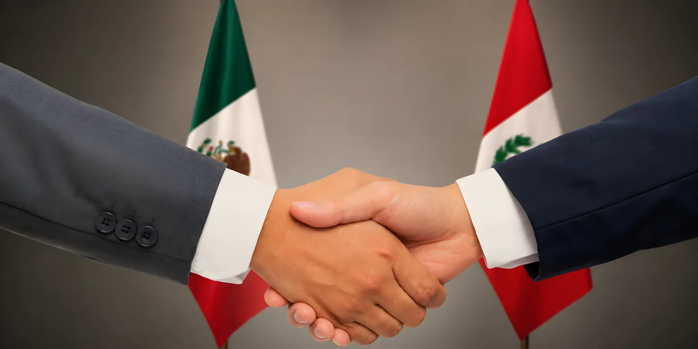

Vendredi 7 août 2026, Mexico et Lima ont annoncé dans un communiqué commun la reprise de leurs relations diplomatiques, rompues depuis le 4 novembre 2025 à l'initiative du Pérou. La crise avait éclaté après l'asile accordé par l'ambassade du Mexique à Lima à l'ex-Première ministre péruvienne Betssy Chávez, poursuivie pour sa participation à la tentative de coup de force de Pedro Castillo fin 2022. Le dégel intervient quelques jours après le départ de Betssy Chávez pour Mexico, sous sauf-conduit, et scelle un rapprochement engagé depuis l'investiture de la présidente péruvienne Keiko Fujimori le 28 juillet.
La crise diplomatique trouve son origine dans la chute de Pedro Castillo, destitué et arrêté le 7 décembre 2022 après sa tentative avortée de dissoudre le Congrès péruvien. Dès ce moment-là, le Mexique avait accordé l'asile à son épouse Lilia Paredes et à leurs deux enfants, un premier geste que Lima avait jugé intrusif. Les années suivantes ont été marquées par des prises de position répétées des présidents mexicains en faveur de Castillo, que Lima a systématiquement dénoncées comme une ingérence dans ses affaires intérieures.
La rupture proprement dite est intervenue le 4 novembre 2025, après que l'ambassade du Mexique à Lima a accordé l'asile politique à Betssy Chávez, ancienne cheffe du gouvernement de Castillo et poursuivie pour «conspiration en vue de rébellion» dans la même affaire. Le chef de la diplomatie péruvienne d'alors avait qualifié la décision mexicaine d'«acte inamical». Pendant plusieurs mois, la représentation diplomatique du Mexique au Pérou a été assurée par le Brésil, qui en a formellement pris la charge le 25 janvier 2026.
Tentative de dissolution du Congrès par Pedro Castillo ; destitution et arrestation immédiate. Le Mexique accorde l'asile à son épouse et à ses deux enfants.
La justice péruvienne condamne Pedro Castillo à plus de 11 ans de prison pour rébellion, une sentence que Mexico juge illégale.
Le Pérou rompt ses relations diplomatiques avec le Mexique après l'asile accordé à Betssy Chávez dans la résidence de l'ambassade mexicaine à Lima.
Le Brésil reprend formellement la représentation des intérêts diplomatiques mexicains au Pérou.
Investiture de Keiko Fujimori comme présidente du Pérou ; un dialogue discret s'engage alors avec Mexico.
Reprise officielle des relations diplomatiques. Betssy Chávez quitte le Pérou pour le Mexique sous sauf-conduit, à bord d'un avion de la Force aérienne mexicaine.
Le départ de Betssy Chávez a été la condition posée par le gouvernement mexicain pour la reprise des relations diplomatiques. Selon la présidente Claudia Sheinbaum, il est l'aboutissement «d'un dialogue engagé avec le nouveau gouvernement péruvien depuis déjà plusieurs semaines». Transférée de nuit vers un aéroport militaire de Lima, l'ancienne cheffe du gouvernement a rejoint Mexico à bord d'un avion de la Force aérienne mexicaine, après avoir passé plusieurs mois réfugiée dans la résidence de l'ambassade.
Le chef de la diplomatie péruvienne, Carlos Espá, s'est dit «très content» du dénouement, évoquant un départ organisé «dans un contexte de sécurité et de tranquillité». Côté mexicain, Claudia Sheinbaum a salué le sauf-conduit accordé par Lima comme «une action de bonne volonté», tout en précisant que son gouvernement continuerait de défendre publiquement Pedro Castillo : «Le nouveau gouvernement du Pérou le sait. Mais c'est un pas.»
Le communiqué conjoint des deux ministères des Affaires étrangères reste laconique, évoquant seulement «les liens historiques de fraternité, d'amitié et de coopération» unissant les deux pays, sans détailler les termes précis de l'accord. Le texte n'aborde ni le statut judiciaire de Pedro Castillo, toujours détenu, ni celui de Betssy Chávez, désormais réfugiée au Mexique après avoir purgé sa détention par la fuite diplomatique plutôt que par une décision de justice.
| Étape | Date | Détail |
|---|---|---|
| Chute de Castillo | 7 déc. 2022 | Asile accordé à son épouse et ses enfants |
| Rupture des relations | 4 nov. 2025 | Asile accordé à Betssy Chávez |
| Représentation intérimaire | Brésil, dès le 25 janvier 2026 | |
| Reprise des relations | 7 août 2026 | Départ de B. Chávez pour Mexico |
Le rétablissement des relations ne signe pas la fin du différend idéologique entre les deux capitales : Mexico a rappelé qu'il continuerait de défendre publiquement Pedro Castillo et de contester sa condamnation, tandis que Lima maintient ses poursuites contre l'ex-président et son entourage. Ce dégel illustre plutôt une logique désormais classique dans les relations interaméricaines, où des contentieux nés de l'asile diplomatique — comme ceux qui avaient opposé le Mexique à la Bolivie ou à l'Équateur — finissent par être découplés des désaccords de fond, au nom de la continuité des échanges économiques et consulaires entre deux partenaires que tout, sur le plan idéologique, semble pourtant séparer.
El viernes 7 de agosto de 2026, México y Perú anunciaron en un comunicado conjunto la reanudación de sus relaciones diplomáticas, rotas desde el 4 de noviembre de 2025 por iniciativa de Lima. La crisis había estallado tras el asilo concedido por la embajada de México en Lima a la exprimera ministra peruana Betssy Chávez, procesada por su participación en el intento de golpe de Estado de Pedro Castillo a finales de 2022. El deshielo llega pocos días después de la partida de Betssy Chávez hacia México, con salvoconducto, y sella un acercamiento iniciado tras la investidura de la presidenta peruana Keiko Fujimori el 28 de julio.
La crisis diplomática se origina en la caída de Pedro Castillo, destituido y detenido el 7 de diciembre de 2022 tras su fallido intento de disolver el Congreso peruano. Desde entonces, México había concedido asilo a su esposa Lilia Paredes y a sus dos hijos, un primer gesto que Lima consideró intrusivo. Los años siguientes estuvieron marcados por reiteradas tomas de posición de los presidentes mexicanos a favor de Castillo, que Lima denunció sistemáticamente como una injerencia en sus asuntos internos.
La ruptura propiamente dicha se produjo el 4 de noviembre de 2025, después de que la embajada de México en Lima concediera asilo político a Betssy Chávez, expresidenta del Consejo de Ministros de Castillo, procesada por «conspiración para la rebelión» en el mismo caso. El entonces canciller peruano calificó la decisión mexicana de «acto inamistoso». Durante varios meses, la representación diplomática de México en Perú fue asumida por Brasil, que se hizo cargo formalmente de ella el 25 de enero de 2026.
Intento de disolución del Congreso por Pedro Castillo; destitución y detención inmediata. México concede asilo a su esposa y sus dos hijos.
La justicia peruana condena a Pedro Castillo a más de 11 años de prisión por rebelión, sentencia que México considera ilegal.
Perú rompe relaciones diplomáticas con México tras el asilo concedido a Betssy Chávez en la residencia de la embajada mexicana en Lima.
Brasil asume formalmente la representación de los intereses diplomáticos mexicanos en Perú.
Investidura de Keiko Fujimori como presidenta del Perú; se inicia entonces un diálogo discreto con México.
Restablecimiento oficial de relaciones diplomáticas. Betssy Chávez sale de Perú rumbo a México con salvoconducto, a bordo de un avión de la Fuerza Aérea mexicana.
La salida de Betssy Chávez fue la condición impuesta por el gobierno mexicano para la reanudación de relaciones diplomáticas. Según la presidenta Claudia Sheinbaum, es el resultado de «un diálogo iniciado con el nuevo gobierno peruano desde hace ya varias semanas». Trasladada de madrugada a un aeropuerto militar de Lima, la exjefa de gabinete llegó a México a bordo de un avión de la Fuerza Aérea mexicana, tras varios meses refugiada en la residencia de la embajada.
El canciller peruano, Carlos Espá, se declaró «muy contento» con el desenlace, señalando que la salida se realizó «en un contexto de seguridad y tranquilidad». Por su parte, Claudia Sheinbaum saludó el salvoconducto concedido por Lima como «un gesto de buena voluntad», al tiempo que precisó que su gobierno seguirá defendiendo públicamente a Pedro Castillo: «El nuevo gobierno de Perú lo sabe. Pero es un paso.»
El comunicado conjunto de ambas cancillerías es parco: solo menciona «los lazos históricos de fraternidad, amistad y cooperación» que unen a los dos países, sin detallar los términos precisos del acuerdo. El texto no aborda ni la situación judicial de Pedro Castillo, aún detenido, ni la de Betssy Chávez, ahora refugiada en México tras eludir la justicia peruana por la vía diplomática antes que por una resolución judicial.
| Etapa | Fecha | Detalle |
|---|---|---|
| Caída de Castillo | 7 dic. 2022 | Asilo concedido a su esposa e hijos |
| Ruptura de relaciones | 4 nov. 2025 | Asilo concedido a Betssy Chávez |
| Representación interina | Brasil, desde el 25 de enero de 2026 | |
| Restablecimiento | 7 ago. 2026 | Salida de B. Chávez hacia México |
El restablecimiento de relaciones no pone fin al desacuerdo ideológico entre ambas capitales: México ha recordado que seguirá defendiendo públicamente a Pedro Castillo y cuestionando su condena, mientras Lima mantiene sus procesos contra el expresidente y su entorno. Este deshielo ilustra más bien una lógica ya habitual en las relaciones interamericanas, donde los litigios nacidos del asilo diplomático —como los que antes enfrentaron a México con Bolivia o Ecuador— terminan desacoplándose de los desacuerdos de fondo, en nombre de la continuidad de los intercambios económicos y consulares entre dos socios que, en el plano ideológico, todo parece sin embargo separar.